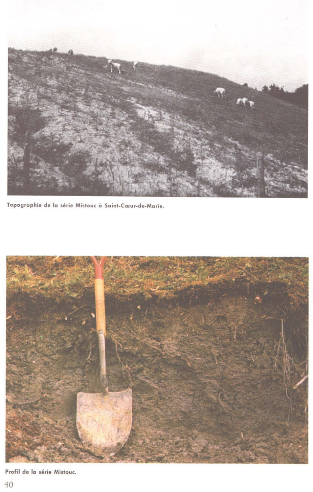
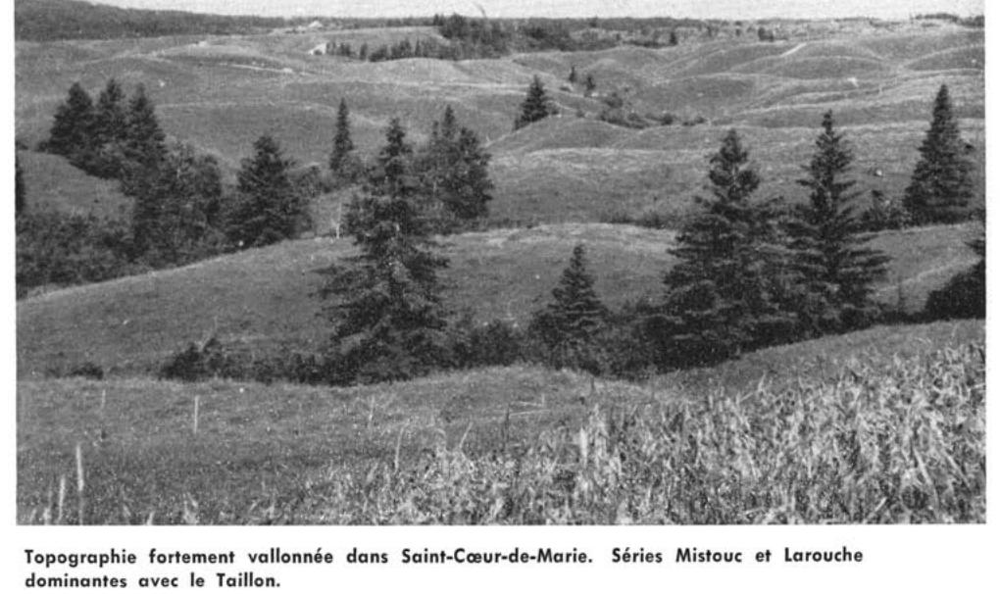

Identification & Caractéristiques Générales
La série Mistouc se développe sur des dépôts argileux d'origine lacustre ou marine, caractéristiques des basses-terres de la région du Lac-Saint-Jean. Ces matériaux parentaux à texture fine se retrouvent principalement dans les secteurs de Normandin, de Saint-Félicien et de Dolbeau. Sur le plan géomorphologique, cette série s'établit sur des topographies en pente et vallonnées, occupant typiquement les positions convexes des versants. Cette situation physiographique expose le sol à des processus morphogénétiques actifs, notamment le ruissellement de surface et la reptation en milieu boisé.
Morphologiquement, le profil présente une texture dominante variant de l'argile au loam argileux, souvent surmontée d'un faciès limoneux en surface. Le drainage naturel est qualifié de bon à modérément bon en raison de la position surélevée dans la caténa, bien que la conductivité hydraulique des horizons inférieurs argileux demeure restreinte. La réaction du sol est acide, et les horizons de surface se caractérisent par une structure instable. Soumis à une érosion pluviale moyenne à sévère sur les parties convexes, le sol présente fréquemment un faciès appauvri de couleur gris-blanc dans les zones où la couverture herbacée a été dégradée.
Sur le plan agronomique, les aptitudes de la série Mistouc sont fortement limitées par sa susceptibilité marquée à l'érosion hydrique et par la dégradation structurale des horizons de surface. En raison de sa topographie vallonnée et de sa vulnérabilité au lessivage et au ravinement, une proportion importante de ces sols doit être maintenue sous couvert végétal permanent ou sous couvert forestier. Pour les superficies exploitées en agriculture, la mise en valeur requiert l'application systématique de pratiques anti-érosives rigoureuses, telles que le travail cultural selon les courbes de niveau, le maintien de bandes rivaies ou de cultures de couverture, ainsi que des interventions de chaulage pour corriger l'acidité.
Caractères Distinctifs & Morphologie Génétique (Pédologie de la région du Lac-Sa — Page 44)
- Topographie : dépression
- Drainage : mauvais à très mauvais
- Grand-groupe génétique : gleysol
- Degré d'érosion : nul
- Classe d'utilisation : 1
- Association géographique : terres noires, tourbières, série Normandin
- Végétation naturelle : grands saules, aulnes, bouleaux, épinettes, trembles, sapins, etc.
Classification Taxonomique & Environnement Pédologique
| Ordre Pédologique | Brunisolique |
|---|---|
| Grand Groupe (SCSS) | Brunisol dystrique |
| Sous-Groupe Taxonomique | Brunisol dystrique orthique |
| Famille Pédologique | Argileuse-fine, mixte argileux, neutre |
| Mode de Dépôt Parental | Marin |
| Classe de Drainage Naturel | Bien drainé |
| Régime Thermique & Humidité | Frais / Subhumide |
Description Morphologique du Profil Type
Séquences génétiques des horizons pédologiques caractérisant le profil type représentatif de la série Mistouc :
Profil représentatif — Pédologie de la région du Lac-Sa
✓ Source : Pédologie de la région du Lac-Sa — Page 39Couleur Munsell : Non précisée
Structure & Consistance : Polyédrique à granulaire
Description morphologique : Mousses et débris organiques; pH: 5.4.
Couleur Munsell : 5Y 7/2
Structure & Consistance : Grossièrement polyédrique à nuciforme
Description morphologique : Argile limoneuse à limon argileux gris clair (5Y 7/2); structure grossièrement polyédrique à nuciforme; pas de rouille, assez friable; pH: 5.8.
Couleur Munsell : 5Y 6/2
Structure & Consistance : Cubique à la partie inférieure de l'horizon d'où une plus grande friabilité
Description morphologique : Argile limoneuse gris-olive clair (5Y 6/2); très grossièrement polyédrique; moins friable que B 1 et se débitant en gros fragments polyédriques; pas de rouille, tendance à la structure cubique à la partie inférieure de l'horizon d'où une plus grande friabilité; pH: 6.3.
Couleur Munsell : 5Y 5/2
Structure & Consistance : Finement polyédrique à tendance fortement polyédrique vers la base
Description morphologique : Argile limoneuse olive (5Y 5/2) structure finement polyédrique à tendance fortement polyédrique vers la base; très friable, plasticité faible; pH: 6.5.
Profil représentatif — Pédologie de la région du Lac-Sa
✓ Source : Pédologie de la région du Lac-Sa — Page 44Couleur Munsell : Non précisée
Structure & Consistance : Polyédrique à granulaire
Description morphologique : M.O. brûlée, bois mort, rouches; pH: 4.5.
Couleur Munsell : Non précisée
Structure & Consistance : Polyédrique à granulaire
Description morphologique : Tourbe limono-fibreuse, graisseuse, grise; pH: 4.6 à 5.0.
Couleur Munsell : 5YR 5/1, 7.5YR 4/4
Structure & Consistance : Polyédrique à granulaire
Description morphologique : Argile limoneuse grise (5YR 5/1); cassure conchoïdale, avec points (petites taches) brun foncé (7.5YR 4/4): très dense, massif; pH: 5.7.
Couleur Munsell : 10YR 6/3, 2.5Y 6/2, 7.5YR 5/8
Structure & Consistance : Polyédrique à granulaire
Description morphologique : Argile brun pâle (10YR 6/3) avec taches brun clair (2.5Y 6/2) et points brun vif (7.5YR 5/8); pH: 6.3.
Couleur Munsell : 2.5Y 6/2 (matrice), 5Y 6/1 (marbrures)
Structure & Consistance : Polyédrique à granulaire
Description morphologique : Argile gris brun clair (2.5Y 6/2) de couleur assez uniforme avec taches grises (5Y 6/1) parsemée de taches rouges peu abondantes; petites mouchetures verticales; horizon massif; pH: 6.9.
Couleur Munsell : 5Y 6/2, 7.5YR 4/4, 5YR 6/1
Structure & Consistance : À tendance cubique
Description morphologique : Argile gris olive clair (5Y 6/2) avec petites taches brunes (7.5YR 4/4) et traînées grises (5YR 6/1); structure à tendance cubique; horizon plus friable que G 2 ; pH: 7.1
Profils Photographiques & Planches de Terrain
Documents iconographiques, figures pédologiques et coupes de terrain documentées dans les mémoires d'inventaire pour de la série Mistouc :


Propriétés Physico-Chimiques & Analyses de Laboratoire
Données Analytiques de Laboratoire
Aucune analyse physico-chimique quantitative de laboratoire (granulométrie par sédimentométrie, pH H₂O/CaCl₂, matière organique Walkley-Black ou bases échangeables) n'a été consignée pour cette unité dans les archives historiques numérisées ou les bases contemporaines EESSAQ/MAPAQ.
Particularités Régionales, Phases & Variantes Pédologiques
Déclinaisons régionales, faciès texturaux, phases d'érosion ou de pierrosité et variantes cartographiées par étude pour de la série Mistouc :
| Étude Régionale | Symbole | Appellation / Phase / Variante | Différenciation avec la série type (Analyse pédologique) |
|---|---|---|---|
| Comté de Chicoutimi | Mc |
Mistouc argile | Modalité modale de référence (type de base de la série). |
| Pédologie de la région du Lac-Saint-Jean | Mc |
Mistouc argile | Conforme à la série type de référence (caractéristiques texturales et drainage identiques). |
Distribution Pédo-Paysagère & Représentativité Cartographique (Couverture PPS 2026)
- Taillon loam (TLL) — co-occurrente dans 247 polygone(s)
- Alma loam (ALM) — co-occurrente dans 93 polygone(s)
- Girard loam sableux (GID) — co-occurrente dans 63 polygone(s)
Aptitudes Agronomiques, Hydropédologie & Conservation des Sols
Indicateurs Hydropédologiques & Vulnérabilité à l'Érosion (BDHP 2026)
Interprétation BDHP : Potentiel de ruissellement modérément élevé. Faible taux d'infiltration, présence d'horizons ralentissant le drainage descendant.
Classement selon l'Inventaire des Terres du Canada (ITC / CLI) : Classe 2c.
- Potentiel agricole : Terroir adapté aux cultures régionales selon la texture dominante et la régie de drainage.
- Contraintes majeures : Bien drainé. Risque d'engorgement temporaire ou d'excès d'eau printanier.
- Gestion & Aménagement : Drainage souterrain ou superficiel préconisé sur les terres planes. Chaulage et apport organique régulier selon les bilans agronomiques.
- Cultures adaptées : Grandes cultures (maïs, soya, céréales), prairies fourragères et cultures maraîchères selon le contexte géomorphologique.